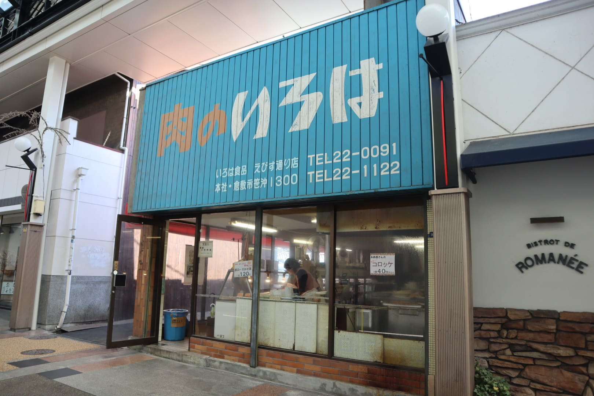
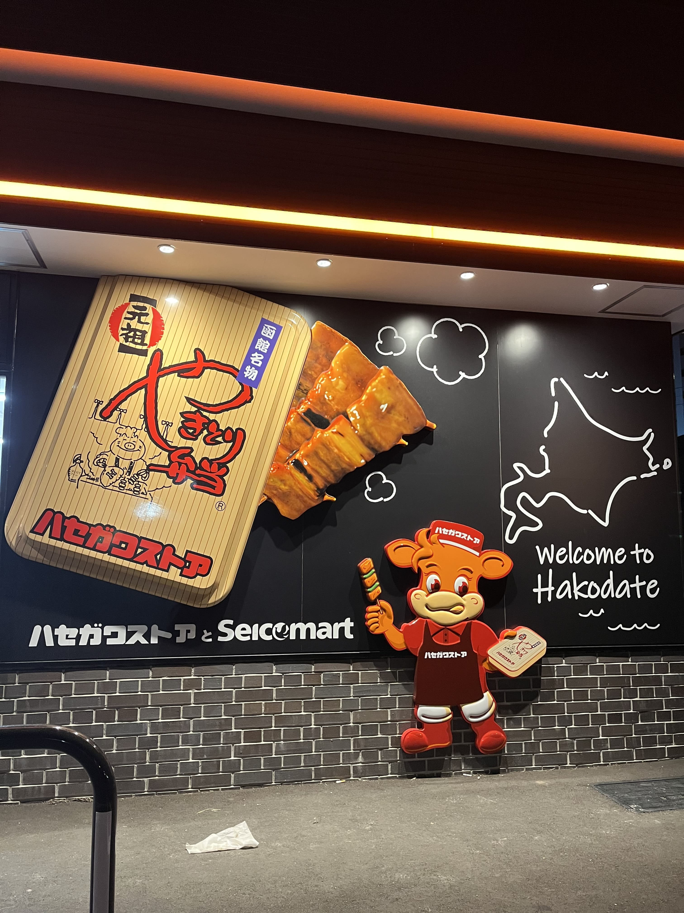
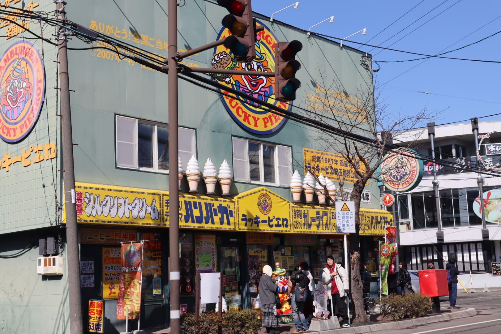

看板①

2025年3月26日岡山県の倉敷にて撮影
倉敷の美観地区の入り口にある地元の精肉店の看板です。お肉屋さんの看板といえば赤やピンクといったイメージがありましたが、この看板は青色を基調にオレンジの「肉の」という文字が映えるデザインとなっていました。
看板②

2026年2月24日北海道の函館にて撮影
ハセガワストアという函館のコンビニエンスストアの看板です。名物のやきとり弁当が（実際には鶏肉ではなく豚肉）立体的に表現されており、遠くから見ても目を惹くデザインとなっています。
看板③
.

2026年2月25日北海道の函館にて撮影
こちらも看板②と同様に函館で撮影した看板です。ラッキーピエロというご当地ファストフード店の看板で、看板を見るだけで何が売っているのかがわかり、遊び心のある可愛らしいデザインとなっています。